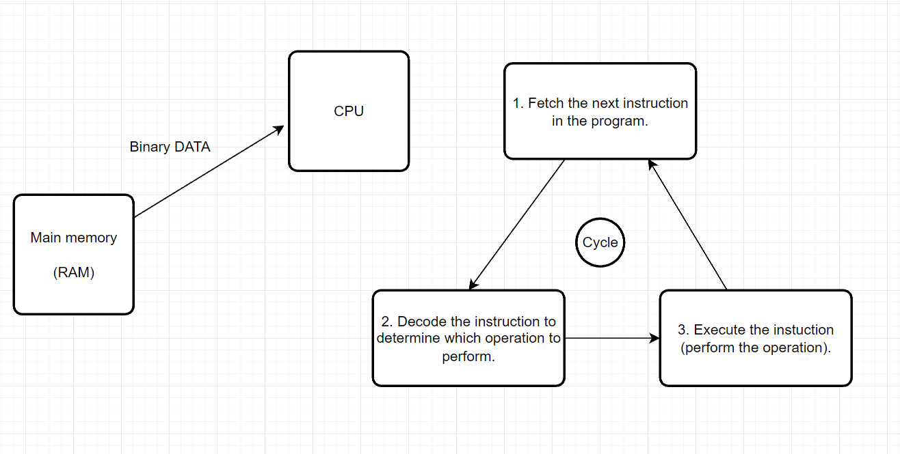
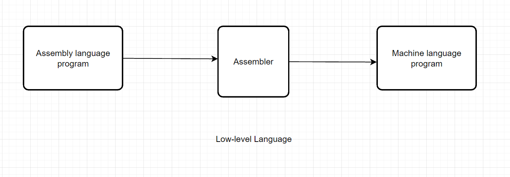

Computer and Programming

What Is Computer?
A computer is an electronic machine that processes information—in other words, an information processor: it takes in raw information (or data) at one end, stores it until it's ready to work on it, chews and crunches it for a bit, then spits out the results at the other end. All these processes have a name. Taking in information is called input, storing information is better known as memory (or storage), chewing information is also known as processing, and spitting out results is called output.
How Does a Computer Work?
A computer processes the input to produce the desired output, but how does a machine outperform the human brain? Conventional computers don't try to mimic the human brain. Instead, they run commands sequentially, with data constantly moving from input and memory to the device's processor. Neuromorphic computers, on the other hand, process data at the same time, making them faster, energy-efficient, and closer to the structure of the human brain.
Overall, a computer works in four steps:
- Input: Input is the data before processing. It comes from the mouse, keyboard, microphone, and other external sensors.
- Storage: The storage is how the computer retains input data. The hard drive is used for long-term and mass data storage while the data set for immediate processing is stored temporarily in the Random Access Memory (RAM).
- Processing: Processing is where input gets transformed into output. The computer's Central Processing Unit (CPU) is its brain. It's responsible for executing instructions and performing mathematical operations on the input data.
- Output: Output is the final result of data processing. It can be anything from images, video, or audio content, even the words you type using a keyboard. You can also receive the output through a printer or a projector instead of directly through your device.
Software?
Software is a set of computer programs and associated documentation and data.[1] This is in contrast to hardware, from which the system is built and which actually performs the work.
System Software
- Operating Systems: Windows, Mac Os, Linux
- Utility Programs: Compression, Virus scanners, Back up
- Software Development:Assemblers, Compilers, Interpreter
Application Software
- Example Application: Microsoft word, PowerPoint, Excel, Photoshop
How Computer store data?
All data stored on storage media – whether that’s hard disk drives (HDDs), solid state drives (SSDs), external hard drives, USB flash drives, SD cards etc – can be converted to a string of bits, otherwise known as binary digits. These binary digits have a value of 1 or 0, and the strings can make up photos, documents, audio and video. A byte is the most common unit of storage and is equal to 8 bits.
All data in a computer is stored as a number. For example, letters become numbers; the Complete Works of Shakespeare is around 1250 pages in print, contains 40 million bits, with one byte per letter, totalling five megabytes (5MB). Photographs are converted to a set of numbers that indicate the location, colour and brightness of each pixel. Whereas convention numbers use ten digits (0, 1, 2, 3, 4, 5, 6, 7, 8, 9), binary numbers use two digits to represent all possible values. The conventions numbers 0-8 translate into binary numbers as: 0, 1, 10, 11, 100, 101, 110, 111 and 1000. With binary numbers, any value can be stored as a series of items which are either true (1) or false (0).
Binary data is primarily stored on the hard disk drive (HDD). The device is made up of a spinning disk (or disks) with magnetic coatings and heads that can both read and write information in the form of magnetic patterns. In addition to hard disk drives, floppy disks and tapes also store data magnetically. Newer laptops, as well as mobile phones, tablets, USB flash drives and SD cards, use solid state (or flash) storage. With this storage medium, the binary numbers are instead stored as a series of electrical charges within the NAND flash chips. Because all data is made up of a string of binary numbers, just one number out of place can cause a file to become corrupt.

How Program Work
The CPU runs instructions using a "fetch-execute" cycle: the CPU gets the first instruction in the sequence, executes it (adding two numbers or whatever), then fetches the next instruction and executes it, and so on. Some of the instructions affect the order that the CPU takes through the instruction sequence. For example, an instruction might direct the CPU to jump back to an earlier point in the instruction sequence (loops are implemented this way), or to skip over the next instruction if a particular condition is true (if-statements are implemented this way).
What is Fetch - Decode - Execute - Cycle
Assembly language
In computer programming, assembly language, often referred to simply as Assembly and commonly abbreviated as ASM or asm, is any low-level programming language with a very strong correspondence between the instructions in the language and the architecture's machine code instructions. Assembly language usually has one statement per machine instruction (1:1), but constants, comments, assembler directives, symbolic labels of, e.g., memory locations, registers, and macros are generally also supported.
